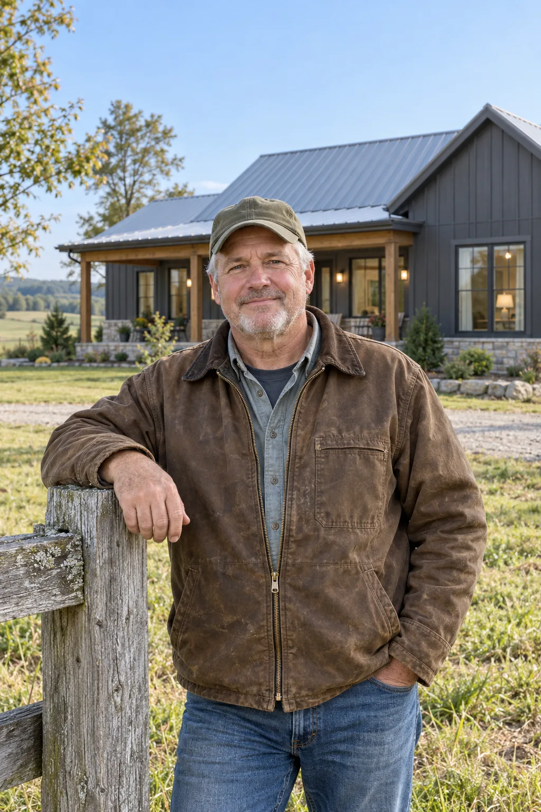
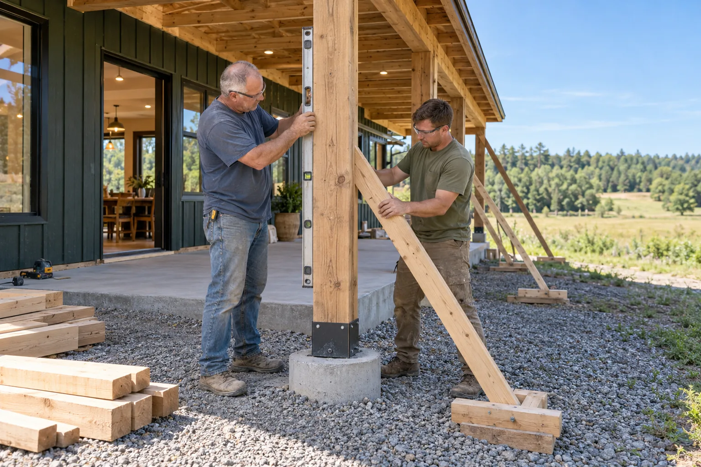
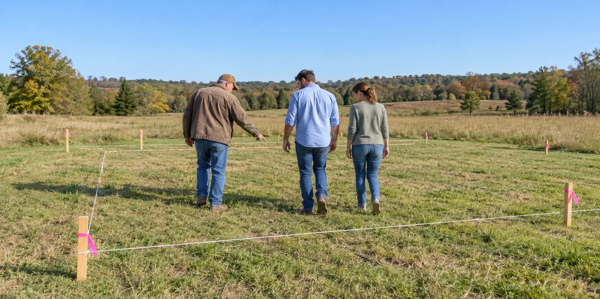

About us
Meet the FIELDHOUSE Team
FIELDHOUSE is a small builder in Franklin that works on rural land. These are the people who’ll be on your property.

Drew Miller · Owner, FIELDHOUSE
On acreage, the house is only half the job.
Building on land is different from building in a subdivision. Before we can pour a foundation, somebody has to build a driveway a concrete truck can climb, find out where the septic field will pass, run power a quarter mile and figure out where the water goes in a hard rain. I walk the property with you before anything gets drawn, and I’ll tell you what the land is going to cost along with the house.
Drew Miller

Our crew
Our own crew frames, roofs and finishes.
FIELDHOUSE carpenters handle the framing, metal roofing, siding and trim. Excavation, septic, plumbing, electrical and HVAC go to subcontractors we’ve worked with for years, and your project manager is the one person you call.
- We start with the land
- Driveway, water, septic and power before the floor plan.
- We build for real use
- Mudrooms, shops and barns laid out for how you work.
- Changes go in writing
- Every change is priced and signed before we do it.

Who does what
Know who’s building on your land.
On the first visit we’ll tell you who will run your project, who handles the permits and the septic approval, which surveyors and engineers your land needs, and how changes are approved. All of it goes in your written proposal.
Before you hire a builder
Tennessee requires a contractor license for jobs of $25,000 or more. Look up the license with the state Board for Licensing Contractors, ask who will run your job, and ask how changes are handled.
Talk to us about your property